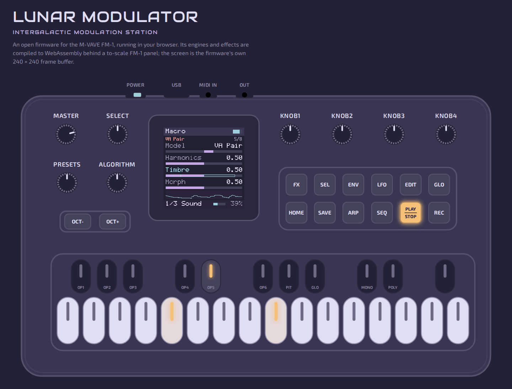
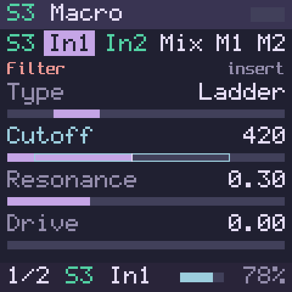

Virtual FM-1 the to-scale panel; its screen is the firmware's own


Follow the editor
Selecting S3 In1 in the editor opened its page here: FX, In1, page 1 of 2.
The computer's keys play the FM-1 while the panel has the focus (PLAY); a click in the editor, or ⌘E, gives them to the editor (EDIT), and Esc gives them back. The ring marks the knob that just turned.
S3 In1 Filter 0.6 KB · 1 cable in
This repository (MIT): zero-delay-feedback filters after Zavalishin
On the panel now: FX · S3 In1 · page 1 of 2Follow the panel
Page 1KNOB1–4 turn these now
Page 2KNOB1–4 after PAGE
From the panel: KNOB2Cutoff 1.20 kHz → 420 Hz⌘Z undoes it here
Changes, both waysas they land
panelKNOB2S3 In1 Cutoff 1.20 kHz → 420 Hznow
editortypedS3 In1 Resonance 0.25 → 0.309 s
editordragS1 In1 ⇄ In2: Comp, Gate1 min
fileopenProject "First orbit"3 min
Flow
audio
empty slot
● cables in! refused
Drag a block to move or swap it
S1
Arp
Off
Engine
Drums
Kit Punch · 16 pads
In1
Comp
Punch · −18 dB
In2
Gate
−40 dB
85 %
S2
Arp
Up
1/16
Engine● 2
Macro
Wavetable
In1
Echo
300 ms · Mix 0.35
In2
+ Add
70 %
S3
Arp
Off
Engine
Macro
VA+Filter
In1● 1
Filter
Ladder · 420 Hz
In2
Drive
Tube · +12.0 dB
80 %
S4
Arp
Off
Engine● 1
FM6
TINE EP
In1
Plate
Mix 0.30
In2
+ Add
60 %
Mix4 sounds
M1! 1
Master Sat
M2
Limiter
Bus
Limiter
Pot
MASTER
Out
Line, USB